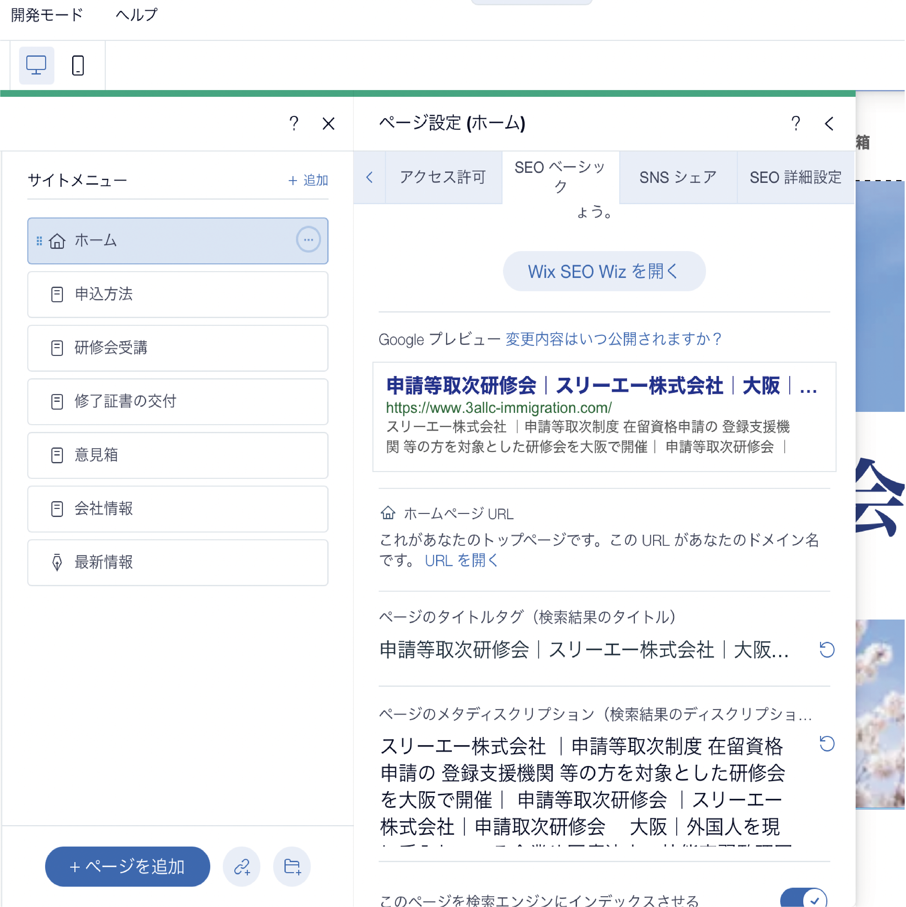
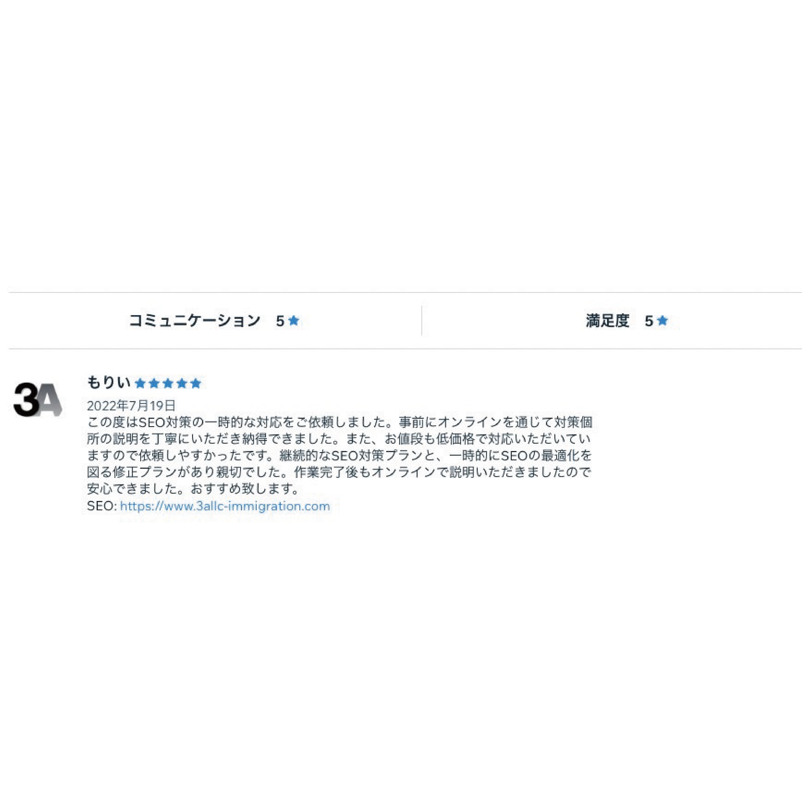

SEO measures
2022
Wix / Ubersuggest / Google Search Console

インターン制作物「スリーエー株式会社の内部SEO対策」
Price : ¥10,000
スリーエー株式会社さんのホームページの内部SEO対策を担当した。今までにSEO対策は10社以上行なっているが、特にキーワード選定に力を入れて行なっている。Ubersuggestを使用して想定される検索ワードを多い時は30種類以上調べた上で、そのホームページにとって最も最適なキーワードを使用するように心がけている。スリーエー株式会社さんからはSEO対策において星5の評価をいただいた。

